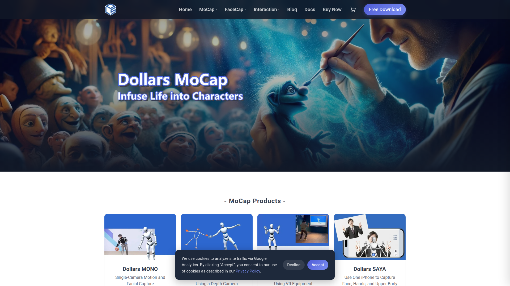

低成本即時動捕系統
Dollars MoCap 是一套低成本即時動作捕捉系統，使用 Webcam 或手機即可進行即時全身動作追蹤。提供 Dollars MONO（單攝影機）與 MARIONETTE（多攝影機）兩種模式，並可即時串流動作資料到 Blender、Unity、Unreal Engine。

Dollars MoCap 提供免費的即時動捕方案，用 Webcam 或手機就能即時串流全身動畫到 Blender/UE/Unity，且直接輸出 BVH 格式。
⚠️ 傳統即時動捕
✅ Dollars MoCap 方案
影片展示 Dollars MoCap 的即時動捕效果，包含單攝影機與多攝影機模式的實際運作，以及如何即時串流動作資料到 3D 軟體中驅動角色。
即時追蹤與串流，延遲極低，適合互動式動捕
標準骨架動畫格式輸出，直接相容各主流軟體
支援多攝影機配置，提升追蹤精度與覆蓋範圍
Dollars MONO Free 提供免費版本，包含基本的單攝影機即時動捕功能。付費版本解鎖多攝影機支援、更高精度的追蹤、以及進階的串流功能。定價策略對獨立開發者友善，免費版已可滿足基本動捕需求。
Dollars MoCap 的 BVH 輸出格式與 AI 動作生成工具 流程直接相容，使其成為即時動捕方案中與 AI 動作生成工具 搭配最順暢的選擇。可以將 Dollars MoCap 即時捕捉的動作直接輸出為 BVH，然後在 AI 動作生成工具 流程中作為參考或編輯素材使用。
Dollars MoCap 在流程中提供「即時動作捕捉」的能力，是 Pipeline 中將真人動作快速數位化的即時工具。其即時串流特性也適合用於動作預覽與互動式動作設計。
Dollars MoCap 以低成本與 BVH 直接輸出的特性，成為 AI 動作生成工具 流程中最適合搭配的即時動捕工具。免費版即可評估效果，多機模式則提供進階品質選項。